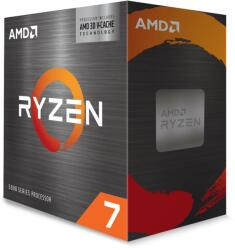

Ramok
AMD Ryzen 7 Processzor

Műszaki előírások
Típus AMD Ryzen 7
Magok száma: 8 magos
Szálak száma: 16
Processzor foglalat : AMD Socket AM4
Processzor órajel: 3400 MHz
Processzor Turbo órajel: 4500 MHz
Gyártási technológia: 7 nm
Integrált grafikai processzor: Nincs
Leírás:
A Vermeer családba tartozó AMD Ryzen 7 5800X3D mikrochipet legfőképp az átlagosnál erősebb számítógépekhez készítették. A processzor összesen 8 magot kínál, 3,4 GHz órajel-frekvenciája pedig kielégítő teljesítményt garantál a számítási feladatokhoz. Szükség esetén automatikusan túlhúzza magát egészen 4,5 GHz -ig, hogy a komplex feladatokkal is meg tudjon birkózni
Intel Core i5-10400F Processzor
Műszaki előírások
Típus: Intel Core i5
Magok száma :6 magos
Szálak száma :12
Processzor foglalat : Intel Socket 1200
Processzor órajel :2900 MHz
Processzor Turbo órajel: 4300 MHz
Gyártási technológia: 14 nm
Integrált grafikai processzor :Nincs
Leírás:
A frekvencia, a magok és a szálak optimális egyensúlyával, fejlett tuningolási támogatással, és kimagasló csatlakoztathatósággal az új 10. generációs Intel Core processzorok segítenek az asztali PC-k felturbózásában, és hihetetlen élményeket és termelékenységet tesznek lehetővé a játékosok, a tartalomkészítők és a hétköznapi felhasználók számára.